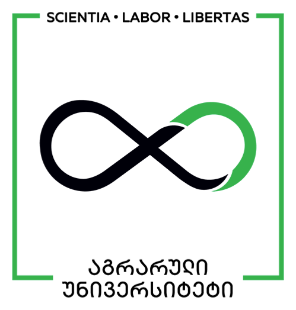

layout: true <div class="my-header"></div> <div class="my-footer"><span>Sandro Razmadze</span></div> --- class: center, middle #Designing a feature-rich polyphonic MIDI synthesizer Sandro Razmadze Agricultural University of Georgia --- class: center, middle # what even is a synth? --- class: center, middle ### "An electronic machine for producing different sounds ..." \- Oxford Advanced Learner's Dictionary --- class: center, middle .fade[] --- class: center, middle .fade[] --- class: center, middle .fade[] --- class: center, middle .fade[] --- class: center, middle .fade[] --- class: center, middle .fade[] --- class: center, middle .fade[] --- class: center, middle .fade[] --- class: center, middle .fade[] --- class: center, middle .fade[] --- class: center, middle .fade[] --- class: center, middle .fade[] --- name: goals # Design goals im building digital additive polyphonic კი შემეძლო ანალოგ მექნა რაც ყველანაირად უკეთესი იქნებოდა მარა მიკროპროცესორების სწავლა მინდოდა 1. fast - responsive graphics - unnoticable roundtrip delay for MIDI 1. feature-rich - multiple waveforms - 4 note polyphony - full MIDI support (12 octaves, velocity, cc messages) - song timeline - chords - automations --- # competition - price range - volca - sequencer fatures --- # Hardware --- #Hardware - ATmega328P .fade[] --- # Hardware - ATmega328P .left-column[ - no DAC, no DSP module ] --- # Hardware - ATmega328P .left-column[ - no DAC, no DSP module ] .right-column[ .fade[] - PWM audio - No audio buffer ] --- # Hardware - ATmega328P .left-column[ - no DAC, no DSP module - 16 megahertz ] --- # Hardware - ATmega328P .left-column[ - no DAC, no DSP module - 16 megahertz ] .right-column[ Sampling rate - 40khz `\(n={16000000 \over 40000}=400\)` (cycles) ] --- # Hardware - ATmega328P .left-column[ - no DAC, no DSP module - 16 megahertz ] .right-column[  `\(f_{sr}={16000000 \over 512}=31250\)` (hz) `\(f_{c}={31250 \over 2}=15625\)` (hz) --- *__512 cycles__* ] --- # Hardware - ATmega328P .left-column[ - no DAC, no DSP module - 16 megahertz - no FPU ] --- # Hardware - ATmega328P .left-column[ - no DAC, no DSP module - 16 megahertz - no FPU ] .right-column[ .fade[ ```cpp int square(float a, double b) { return a*b; } ``` ] ] --- # Hardware - ATmega328P .left-column[ - no DAC, no DSP module - 16 megahertz - no FPU ] .right-column[ .fade.small_code[ ```asm square(float, double): push r28 push r29 in r28,__SP_L__ in r29,__SP_H__ sbiw r28,20 in __tmp_reg__,__SREG__ cli out __SP_H__,r29 out __SREG__,__tmp_reg__ out __SP_L__,r28 std Y+1,r22 std Y+2,r23 std Y+3,r24 std Y+4,r25 std Y+5,r18 std Y+6,r19 std Y+7,r20 std Y+8,r21 ldd r18,Y+5 ldd r19,Y+6 ldd r20,Y+7 ldd r21,Y+8 ldd r22,Y+1 ldd r23,Y+2 ldd r24,Y+3 ldd r25,Y+4 * rcall __mulsf3 std Y+13,r22 std Y+14,r23 std Y+15,r24 std Y+16,r25 ldd r24,Y+13 ldd r25,Y+14 ldd r26,Y+15 ldd r27,Y+16 std Y+9,r24 std Y+10,r25 std Y+11,r26 std Y+12,r27 ldd r22,Y+9 ldd r23,Y+10 ldd r24,Y+11 ldd r25,Y+12 * rcall __fixsfsi std Y+17,r22 std Y+18,r23 std Y+19,r24 std Y+20,r25 ldd r24,Y+17 ldd r25,Y+18 adiw r28,20 in __tmp_reg__,__SREG__ cli out __SP_H__,r29 out __SREG__,__tmp_reg__ out __SP_L__,r28 pop r29 pop r28 ret ``` ] ] --- # Hardware - ATmega32<span style="text-decoration:underline">8</span>P .left-column[ - no DAC, no DSP module - 16 megahertz - no FPU - 8 bits ] --- # Hardware - ATmega328P .left-column[ - no DAC, no DSP module - 16 megahertz - no FPU - 8 bits - 1 kb of SRAM ] --- # Hardware - ATmega<span style="text-decoration:underline">32</span>8P .left-column[ - no DAC, no DSP module - 16 megahertz - no FPU - 8 bits - 1 kb of SRAM - 32 kb of flash ROM ] --- # Hardware - ATmega<span style="text-decoration:underline">32</span>8P .left-column[ - no DAC, no DSP module - 16 megahertz - no FPU - 8 bits - 1 kb of SRAM - 32 kb of flash ROM ] .right-column[.fade[ ```c #include <avr/pgmspace.h> const uint8_t sine_wave[253] PROGMEM = {127, 130, 133, 137, 140, 143, 146, 149, 152, 155, 158, 162, 165, 168, 171, 174, 177, 179, 182, 185, 188, ... const uint16_t pow_6[253] PROGMEM = {0, 1, 2, 3, 4, 5, 6, 7, 8, 9, 10, 11, 12, 13, 14, 15, 16, 17, 18, 19, ... const uint16_t midi_note_incrs[253] PROGMEM = {16, 17, 19, 20, 21, 22, 23, 25, 26, 28, 30, 32, 33, 35, 38, 40, 42, 45, ... ``` ]] --- class: middle, center # Are we using a wrong tool for this job?  --- class: middle, center # YES! --- # BUT... - its what was avialeble - working with limited resources - its hard - use hardware to its maximum -- count: false .lol[demoscene???] --- class: center, middle # back to how to _synth_ --- - ბლოკ დიაგრამა რომ ვკითხულობთ ამპლიტუდას, ვამრვლებთ adsr ზე და ვჯამავთ. - basic synth layout რა რო ჯერ ოსილატორი მერე ის მერე ის - მანდ რო აჯამვის პრობლემაც რთულია და გამრავლებისაც ეგ ჩვენე (float ების მიერ დაგენერირებული ესემბლი) --- # adsr animation? სინუსოიდა რომ ჩანდეს in realtime და თითი რომელიც კლავიშას აჭერს და ეგ adsr ს ატრიგერებს და მერე მაგის ტალღაზე რომ მრავლდება სინუსოიდის ამპლიტუდა და გამომავალი ტალღაც რო ჩანდეს. მერე ეგენი რამდენიმე და ვაფშე კოდი იყოს რო sin ის output ს ამრავლებ ამპლიტუდაზე და ჯამავ და მერე ესემბლი და ვუი...... --- # limitations - 512 cylce limit - schedguling ( ეს მერე sequencer ზე) - რო ანუ ზოგი საქმე არის რომელიც audio rate უნდა მოხდეს და ზოგი არა და --- # synthethis method - simple lookup (ყველაფერი რაც შეიძლება lookup shi წავიდეს -მიდის) - fixed notation - precalculate all the waveforms --- class: center, middle # the sequencer --- # features: - place notes - ability to quickly place notes infront - place automations - chord support! - many many notes --- # aa ability to quickly place notes infront which datastructure????/ -- linked list -- # wrong!!!!! -- basic linked list implementation -- solution? costum malloc! memory arena --- # sequencer data strucure - tagged union - bevr rames ro imashvreba - polymorphiosm in C - small footprint - რადგან გადახტომა არ გვიწევს კაია - - avoiding fragmentation (animation) --- # sequencer visuals - double buffering - visual delta send --- # setup - open source